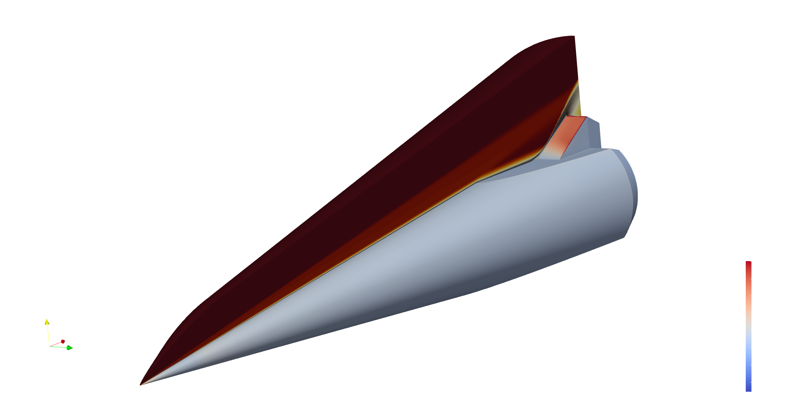
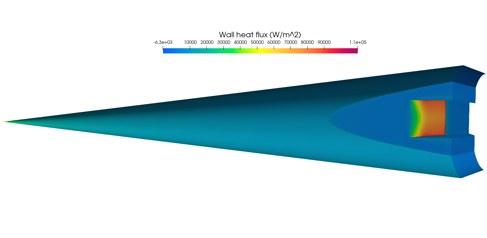
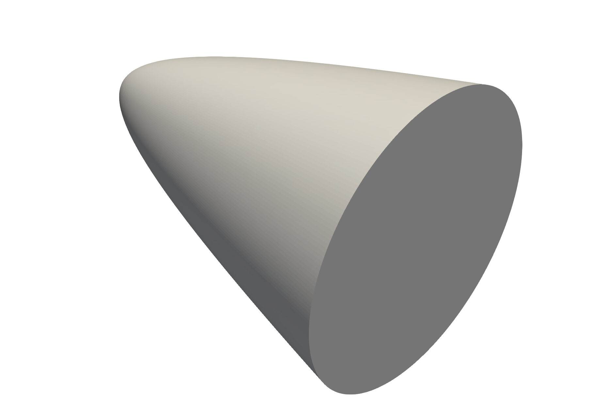
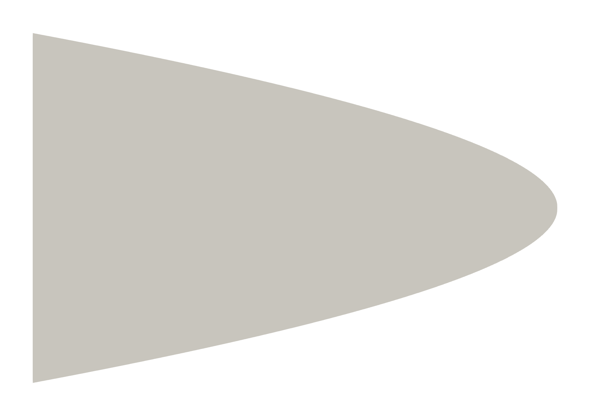
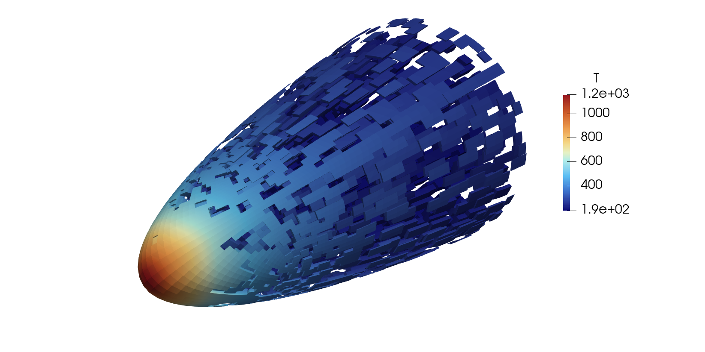
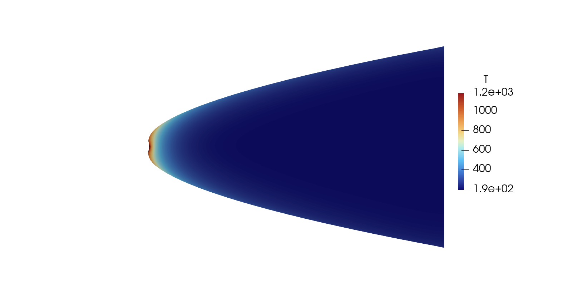

ROM-Tools at Scale: Example Applications#
This feature page highlights two large-scale studies from the Pressio ecosystem showcasing ROM construction and deployment in advanced workflows.
SPARC: Turbulent Flow UQ and Sensitivity#
Pressio is coupled to SPARC for uncertainty quantification of a turbulent flow over a cone-slice-wedge geometry with a 3D RANS solver and SA turbulence model. The workflow targets high-fidelity UQ and sensitivity analysis while remaining computationally practical.
{kind=link}

Cone-slice-wedge geometry with wall heat flux and a flow-field slice.#
Key results:
48.27M finite volumes, 289.6M DOFs; FOM runs converge in roughly 2.0 hours on 12 nodes.
Massive sample-level parallelism via asynchronous workflows, scaling UQ studies across many parameter evaluations.
ROMs deliver sub-0.5% QoI errors, with the largest ROM below 0.1%.
Speedups range from about 30x (coarse ROM) to 15x (fine ROM).
Sobol sensitivity studies drop the estimated cost from ~110,000 to ~5,000 core-days.
{kind=link}
FOM wall heat flux, sample case.#
{kind=link}

ROM wall heat flux, same sample case.#
Aria: Thermal Protection System Inference#
Pressio powers a multi-fidelity ensemble Kalman inversion workflow to infer temperature-dependent material properties for a thermal protection system using SIERRA/Aria.
{kind=link}

Paraboloid nose geometry rendering.#
{kind=link}

Paraboloid nose cross-section.#
Key results:
475,588 DOFs with FOM runs around 630 seconds; ROM runs around 60 seconds.
High-throughput multi-fidelity EKI leverages large, parallel batches of FOM and ROM evaluations per iteration.
Multi-fidelity EKI reaches ~0.03% parameter error versus ~7% for FOM-only.
MF EKI achieves comparable accuracy at roughly an order of magnitude less cost.
{kind=link}

ROM sample mesh focused near the nose.#
{kind=link}

Cross-sectional temperature field.#
Figures are sourced from the Pressio SOM paper examples.